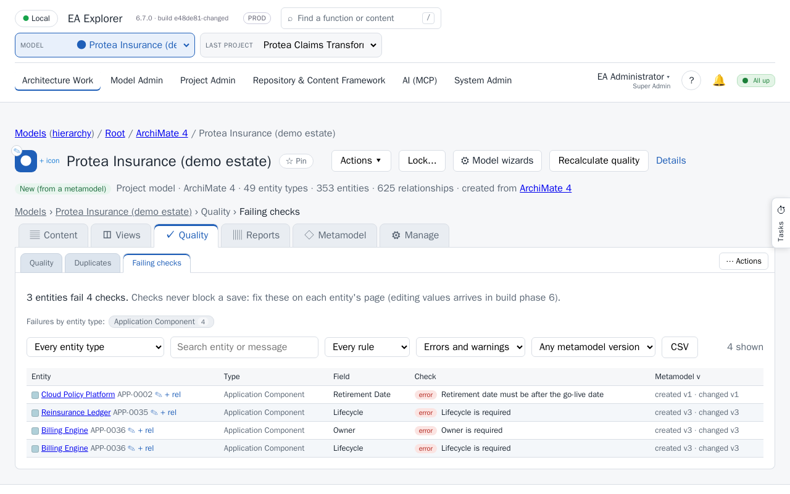

See the checks a model fails
For: Practising architects, Model Admin
Every rule an entity breaks, to fix them.

#/metamodel/{m}/checksWhy do this
Failing checks lists every rule an entity breaks, so you can fix them in order. Errors block commits, so fixing them first unblocks people's work. See Data quality: why it matters and how it is measured.
Quality is not a one-off clean-up but a habit: rules catch problems as they are saved, the score shows the trend, and owners fix what is theirs. A model people trust is one they keep using.
In TOGAF terms: Supports every ADM phase: the content framework is only useful if its building blocks are complete and correct. See EA Explorer and the TOGAF Standard.
The goal: You see which entities break which rules.
Steps
- Open the model, Quality › Failing checks.
- Open an entity to fix it.
- Errors block commits; warnings do not.